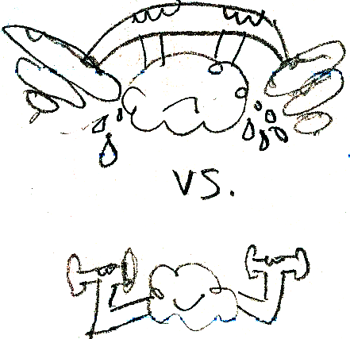

Help users to Remember your brand and Take Action on your web site
 How do users remember (or forget) your brand? How do they learn to use your web site? What causes them to take action on your web site? Read these summaries and reflections from chapters 11-16 and 28 of Eysenck's book, "Fundamentals of Cognition."
How do users remember (or forget) your brand? How do they learn to use your web site? What causes them to take action on your web site? Read these summaries and reflections from chapters 11-16 and 28 of Eysenck's book, "Fundamentals of Cognition."
Chapter 11: The long and short of human memory
There are two types of memory (information storage):
- short-term (working) and
- long-term
Our short-term or working memory can hold only an average of 4 to 7 chunks of information at one time (p.150). If you think about it, it wouldn't take much to overwhelm our poor, beleagured working memory.

Long-term memory has two main categories, with two subtypes in each:
- Explicit (Conscious)
- episodic
- semantic
- Implicit (Unconscious)
- perceptual
- procedural
This may have implications for brand and product experience. In fact, given what Weinschenk says about how much more influential our unconscious is in shaping our behavior, perhaps we should design more for the perceptual and procedural, rather than the episodic and semantic. For instance, less text-heaviness (semantic-focus) would probably be less of a stress on our cognitive limits than, say, attention to gestaltic laws of perception.
Chapter 12: Short-term or working memory
Baddeley's (2001) Model of Working Memory
- Central Executive (Director/CEO)
- can process ANY sensory input
- may perform the following functions: strategy, planning, attentional control
- Phonological loop (inner voice/ear)
- stores auditory rendering (not visual text) of words
- words that sound similar to each other are harder to remember
- shorter words are easier to remember
- Visuospatial Sketchpad (inner eye)
- stores visual patterns of form and color
- records spatial and movement details
- some research suggests that spatial/movement details are stored separately from visual
- Episodic Buffer (story book)
- stores and integrates visual and auditory information, as well as long term memory, into a single representation
Implications of Baddeley's model
- Because each component of WM has a limited capacity, you can't simultaneously do 2 tasks that use the same component (such as two auditory tasks or two visual tasks).
- However, if 2 tasks use different components, you can do them simultaneously (such as 1 auditory and one 1 spatial task).
- Working Memory is used for both temporary storage and processing, but it has limited amounts of these 2 capacities.
Chapter 13: Learning without awareness (unconscious)
- Most tasks involve BOTH implicit (unconscious, not adaptable, non-verbal) and explicit (conscious, flexible, explainable) learning.
- Implicit learning is the way we unconsciously become sensitive to regularities/patterns in our environment.
Chapter 14: It's slipped my mind (forgetting)
- The more information - via cues or triggers - that is available to us when we're trying to remember, the less we will forget (in free, not cued recall). Remember (no pun intended) that we find it easier to recognize (using images, scents, etc.) than to recall without any promptors.
- It's harder to remember when something interferes (such as noise, literal, or figurative). For instance, moving the location of a very familiar item on your homepage (such as your main navigation) might be very disruptive to those whose unconscious has been trained in its prior, familiar location. And adding too many features to your homepage may be overly distracting.
- proactive interference: when previous learning interferes, distracts, or contradicts
- retroactive interference: later learning interferes (especially if it's the same stimulus, but requires different responses)
- Encoding specificity principle (especially for free recall without cued recognition):
- More likely to remember if similar information exists currently as when the memory was encoded (mood, setting, content of material, etc.)
- prediction = if contextual information is different, then retrieval suffers
- mood-state dependent memory = easier to remember if in same mood
- Consolidation (the most important time in remembering)
- a long-lasting process, mostly completed in several hours, but can last for years, that fixes information in long-term memory
- 1st phase (hours) = implicit and explicit
- 2nd phase (days-years) = only explicit memory (episodic/semantic)
- Traumatic repression: the role that EMOTIONS play in memory; but also highlights how SUGGESTIBLE our memories can be.
Chapter 15: The story of my life (autobiographical memory)
What makes autobiographical memory different from mere episodic memory is it's ME focus. Autobiographical memory contains personal significance and personal experience.
Proust Phenomenon: ODORS are especially strong cues/triggers for recalling old/vivid/emotional personal memories.
Chapter 16: Should we believe eyewitnesses?
Maybe not. The true, but sad concept from this chapter is that of misinformation acceptance: people accept misleading information presented after an event and regard it as forming part of their memory. Makes you wonder how fair our justice system is, eh?
On the bright side, this means you can change the way customers remember your product, site, or brand if they've had a less-than-stellar experience with it.
Chapter 28: Consciousness
- Left hemisphere (linguistic, logical) is dominant, and can overrule the right hemisphere (visual, spatial, creative).
- The unconscious, not conscious intention = the cause of action. Most information processing occurs below the level of conscious awareness, attentional processes are important in determining which processed information enters the consciousness.
- Global workspace
- Integrated, large-scale brain activity underlies much of conscious awareness, which integrates and combines a lot of unconscious processes throughout the brain
- a fleeting memory capacity whose focal contents are widely distributed to many specialized networks. It can integrate many competing and co-operating input networks.
- It depends on focal attention: attention is a necessary pre-condition for consciousness
- Attention blink = reduced ability to identify a target presented in a rapid sequence of stimuli when it is preceded shortly beforehand with another target requiring identification. Ergo, don't overstimulate your users or present too many choices, too rapidly.
Bibliography
Eysenck, Michael W. (2006). Fundamentals of cognition. New York: Psychology Press.